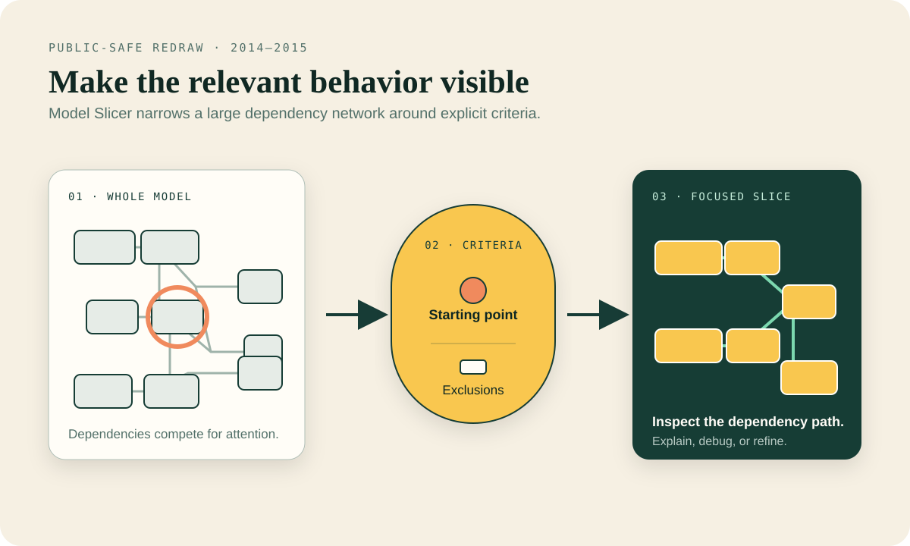
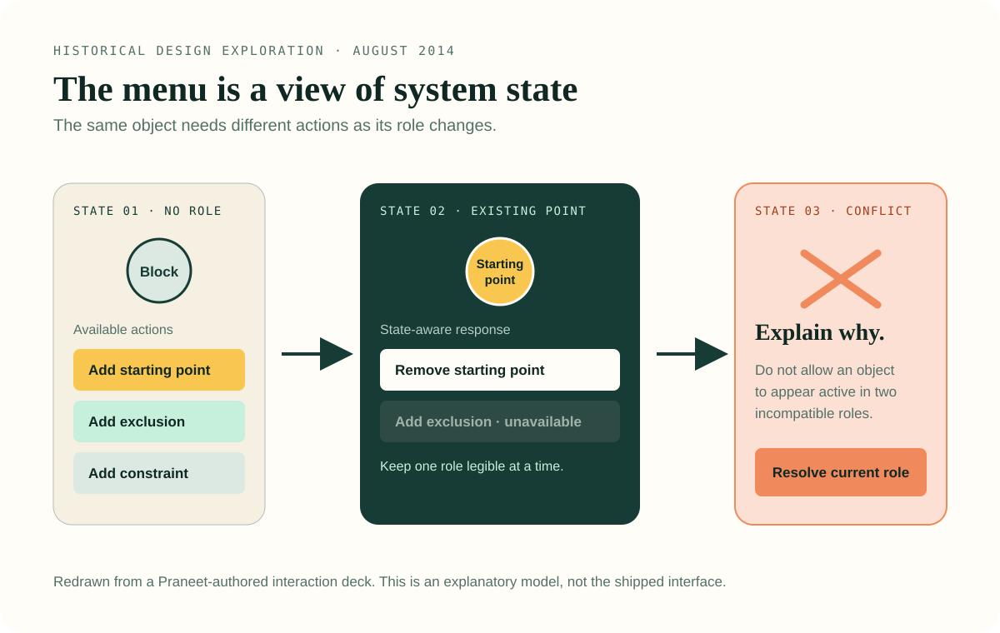
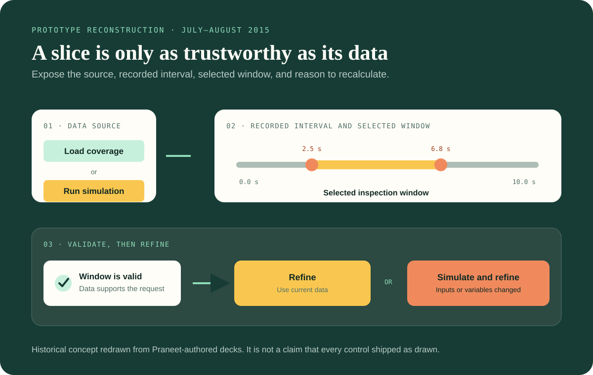
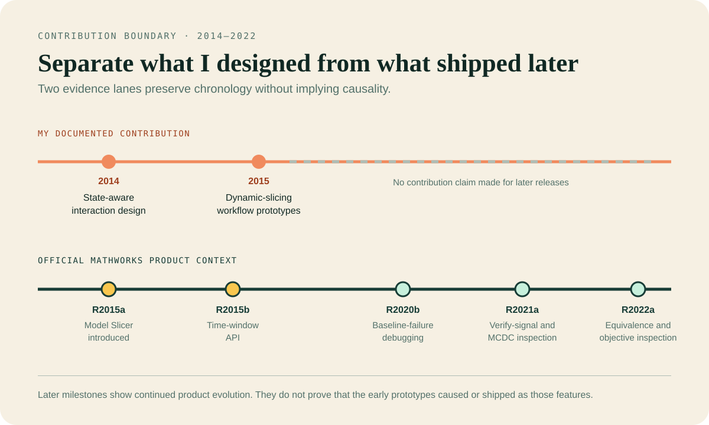

Designing Model Slicer around state, data, and time.
I helped make an early Model Slicer workflow more predictable by exposing the role a selected model object played, the behavioral data supporting a slice, and the time interval in which that data was valid.
- Company
- MathWorks
- Role
- UX design contributor
- Evidence period
- 2014–2016
- Scope
- State logic, prototypes, product feedback, alignment

Model Slicer turns dependency analysis into an interaction problem: users need to trust what is included, excluded, and supported by recorded behavior.
The design challenge was to make invisible system state legible before an engineer committed to an action.
A focused result needs an explainable path.
Model Slicer helps engineers isolate the portions of a Simulink model relevant to a design interest. MathWorks introduced the capability in R2015a with static dependencies, exclusions, constraints, simulation effects, and generation of a simplified model.
The interface had to preserve confidence in that result. A selected object might already be a starting point, an exclusion, or a constrained element. A dynamic slice added another dependency: valid simulation or coverage data for a meaningful time window.
Which block or signal is the user acting on?
Is it a starting point, exclusion, constraint, or none?
Was behavior loaded from coverage or produced by simulation?
Does the requested interval fit the recorded result?
Hands-on interaction design inside a team product.
I authored a 2014 interaction deck that mapped selection states to valid actions. In 2015, I authored dynamic-slicing prototypes that made data source, time range, validity, and recalculation visible.
I developed the detailed interaction logic with a development partner and used the prototypes to gather functional feedback from the primary team and adjacent product teams. A UX researcher authored the team usability plan, so I treat that research plan as shared evidence rather than sole-authored work.
Make every selection state explicit.
I mapped what Model Slicer should offer for an object with no current role, an existing point, a conditional block, a multi-selection, or a conflicting role.
The visible actions were straightforward: add a starting point, add an exclusion, add constraints, or remove a point. The harder design work sat behind those labels. The system needed rules for when each action was available and what happened when an object moved between roles.
I surfaced conflicts as product decisions. If an excluded block became a starting point, for example, the system needed a predictable precedence rule instead of two apparently active states. The deck and enable/disable matrix turned that ambiguity into behavior the team could inspect and resolve.

Turn dynamic slicing into a visible data contract.
Dynamic slicing made the highlighted result depend on recorded behavior. I treated provenance and validity as part of the interaction instead of hidden implementation detail.
My 2015 prototypes explored two paths: load existing coverage data or run a simulation, then refine the highlighted slice within a selected time window. The concepts showed when data had been recorded, constrained the available interval, and surfaced an error when a requested endpoint exceeded the available result.
The prototypes also distinguished Refine from Simulate and refine. That distinction mattered when changed inputs or workspace variables required a new simulation before the highlighted slice could be trusted.

Use prototypes to expose the decisions a team must make.
The prototypes gave the team a shared object for discussing functional behavior before implementation details hardened.
Make selection conflicts concrete enough to resolve.
Review loading, disabled, stale, and invalid states together.
Coordinate the primary development team with upstream and downstream partners.
Four decisions, one inspectable workflow.
The sequence separated what the user selected, what role it played, which behavioral data supported the result, and whether that data was still valid.
- Select a model object
Expose actions appropriate to the current block or signal and its existing Model Slicer role.
- Define the criteria
Add a starting point, exclusion, or constraint while preventing incompatible states.
- Establish evidence
Load coverage data or run a simulation, then show the available recorded interval.
- Refine with confidence
Validate the requested time window and recalculate when inputs or variables have changed.
A supported design outcome, with product context kept separate.
The evidence supports clearer functional-design discussion and cross-team alignment. It does not support an adoption number, time-saved metric, or direct causal claim about later releases.
Public MathWorks material describes static dependencies, exclusions, constraints, dynamic dependencies, and slice generation. A time-window simulation API was introduced in R2015b.
Contemporaneous local evidence records that detailed prototypes helped generate actionable feedback early and align the primary team with adjacent teams.
MathWorks documentation records Model Slicer integrations from R2020b through R2022a. Those milestones establish later product evolution, not causality from my earlier concepts.
Evidence boundary: original interaction decks, a behavior matrix, a usability plan, and contemporaneous review material were examined locally. Proprietary visuals and personnel records remain private; all visuals here are explanatory redraws.
Keep contribution and continuation in different lanes.
The timeline makes the case’s central attribution rule visible: my documented design work is in 2014–2015; later release milestones are official product context.

Technical UX often lives in state logic.
When a result depends on selection roles, data provenance, simulation validity, and time, the interface has to expose those dependencies clearly.
The work also reinforced the value of detailed prototypes as alignment tools. A prototype becomes useful when it reveals the conflicts a team must resolve, not when it merely makes the interface look complete.
Public product sources and evidence notes
Public sources establish product state and chronology. Local primary artifacts establish my contribution.
- MathWorks 2015 Model and Code Verification material: R2015a Model Slicer capabilities.
- MathWorks Model Slicer simulation API: time-window behavior introduced in R2015b.
- Simulink Test release notes: later Model Slicer debugging integrations.
- Simulink Design Verifier release notes: later objective-inspection integrations.
- Debug test failures using Model Slicer: current public example of a later testing workflow.
- Inspect test-generation objectives using Model Slicer: current public example of a later verification workflow.